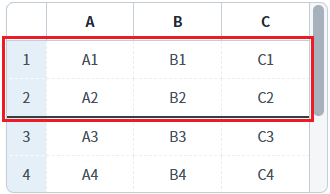
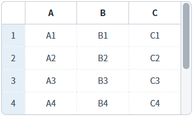
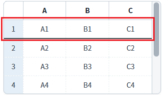
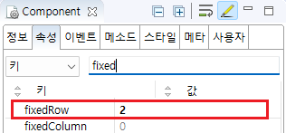

GridView의 속성과 메소드를 사용하여, 행을 고정하는 예제입니다. 이 예제에서 사용한 속성과 메소드별 기능은 다음과 같습니다.
fixedRow: (속성) 행 고정
setFixedRow: (메소드) 행 고정
행 고정 설정하기 - 속성
행 고정 설정하기 - 스크립트
예제 영역 '행 고정 설정하기 - 속성'에 구성된 GridView에서 테스트합니다.1
실행 결과를 확인합니다.
상단에서 2번째 행이 고정되었습니다.
Image 1.브라우저(Chrome) 실행 예시

예제 영역 '행 고정 설정하기 - 스크립트'에 구성된 GridView에서 테스트합니다.1
STEP 1: 초기 상태를 확인합니다.
행 고정이 설정되지 않았습니다.
Image 2.브라우저(Chrome) 실행 예시

2
STEP 2: 행을 고정합니다.
'상단 1번째 행까지 고정하기' 버튼을 클릭합니다.
상단에서 1번째 행이 고정됩니다.
Image 3.브라우저(Chrome) 실행 예시

3
STEP 3: 고정된 행을 해제합니다.
'행 고정 모두 해제하기' 버튼을 클릭합니다.
고정된 행이 모두 해제됩니다.
Image 4.브라우저(Chrome) 실행 예시
1
GridView의 속성을 정의합니다.
[필수] fixedRow="설정 값"
상단에서 고정할 행의 위치
예시) fixedRow="1" //상단에서 1번째 행을 고정
Image 5.웹스퀘어 스튜디오의 Component View - 속성 설정 예시

Example 1.Source
<!-- gridView 의 소스 본문 예시 --> <w2:gridView fixedRow="1"> <!-- 중략 --> </w2:gridView>
1
스크립트를 작성합니다.
GridView의 'setFixedRow' 메소드를 사용하여 스크립트를 작성합니다.
Example 2.Script
//예제 파일의 스크립트 "scwin.btn_ex1_1_onclick", "scwin.btn_ex1_2_onclick"을 참고하세요. //GridView 'grd_exam2'의 상단 첫 번째 행까지 고정하기 grd_exam2.setFixedRow(1); //GridView 'grd_exam2'의 행 고정 해제하기 grd_exam2.setFixedRow(0);
fixedRow
setFixedRow( fixedRowNum )